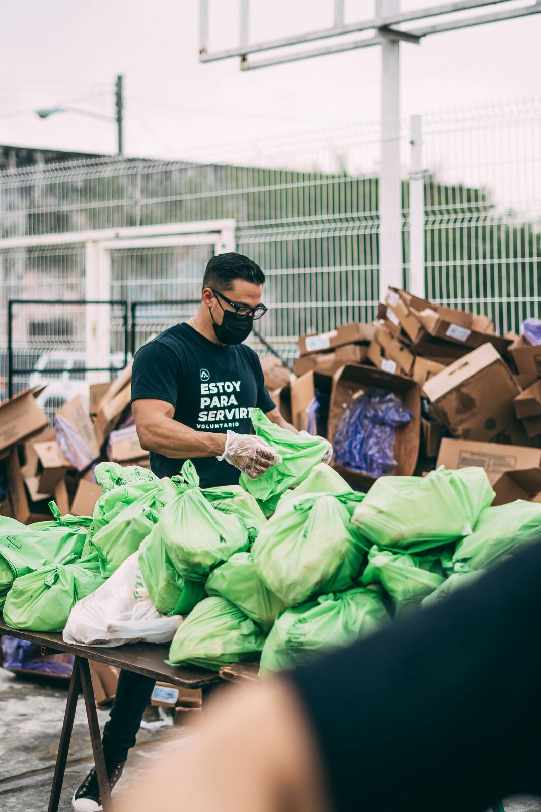
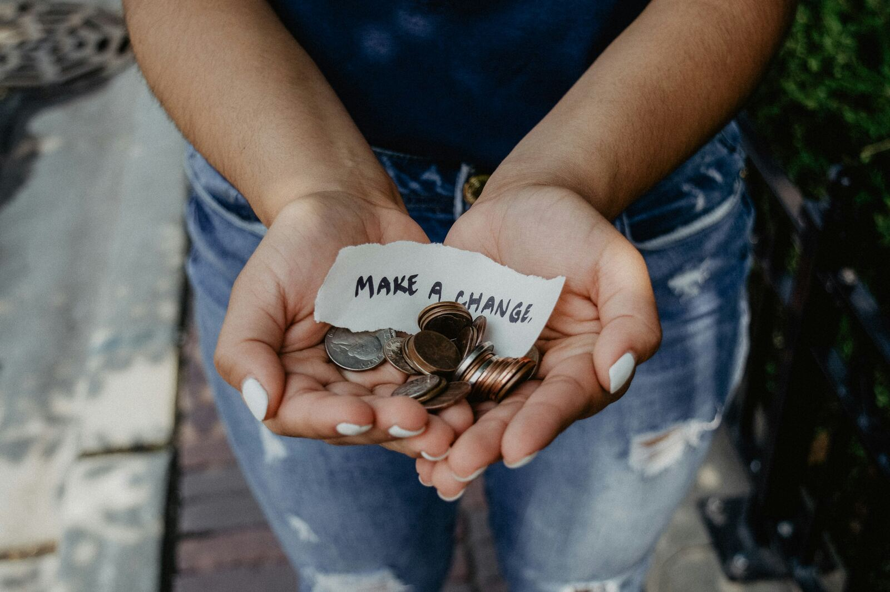
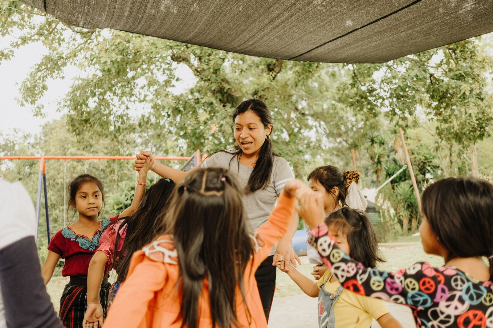
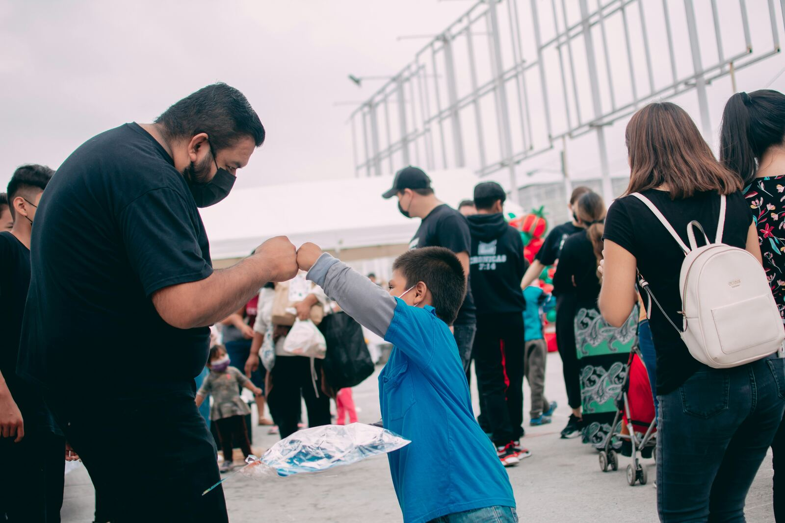
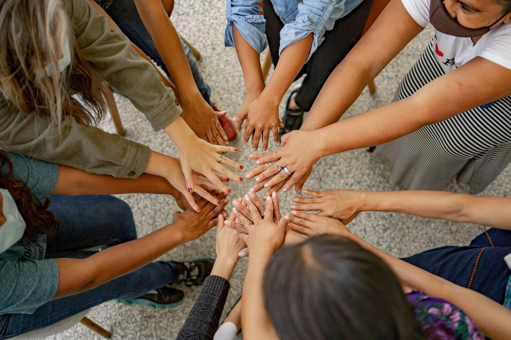

Weekly
Grocery & Essentials Bags
Shelf-stable food, hygiene basics, and diapers, packed by volunteers and delivered to five neighborhood pick-up sites every Saturday morning.
Since 2013 · Phoenix & the Valley
We pack groceries, fill gift bags for the holidays, and hold the door open for kids after school — because a neighborhood takes care of itself, one bag at a time.
01 — What we believe
Manos Abiertas began with volunteers folding kraft bags in a garage. Today the same bags — hand-labeled, hand-tied — reach thousands of families across the Valley. We haven't changed the method. We've just found more hands.

A donor's note, folded into her donation jar — now framed in our lobby.02 — Where the bags go

Shelf-stable food, hygiene basics, and diapers, packed by volunteers and delivered to five neighborhood pick-up sites every Saturday morning.
Every child on our list gets a bag with their name on the tag — toys, a coat, and something sweet — handed over, not shipped, by a real neighbor.

Homework help, hot meals, and an hour of just being a kid — three afternoons a week, for as long as a family needs the extra hand.
03 — On the ground


“I came the first Saturday to hand out water. Four years later I run the Círculo program. Nobody hands you a job title here — you just keep showing up, and the work finds you.”
04 — Make a change
Every dollar goes through the same hands that tie the bags — no ad agency, no overhead layer. Pick an amount, or make it monthly and we'll save you a seat at the folding table.